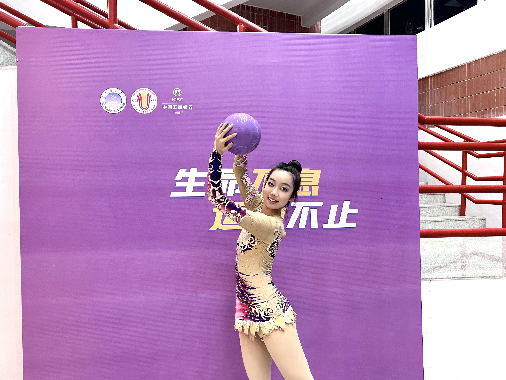
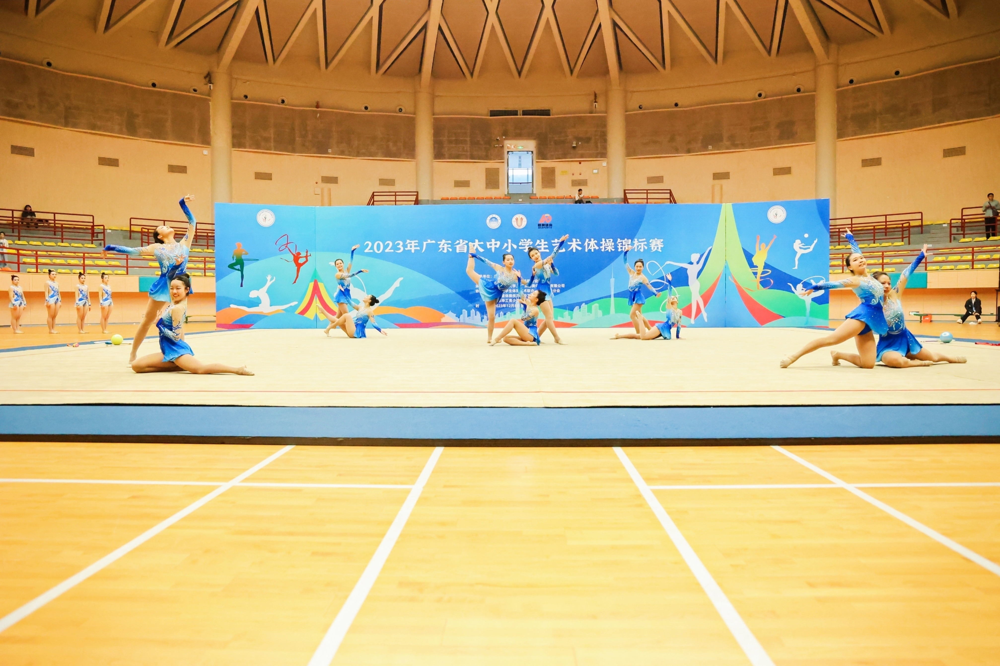
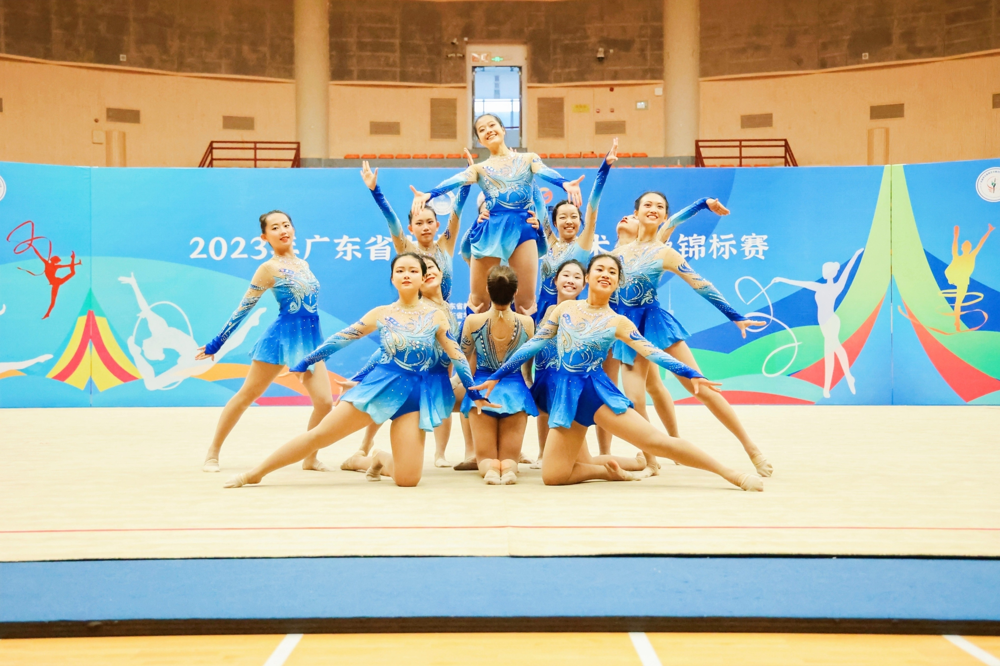

CURRICULUM VITAE
王子钰
ZIYU WANG
中山大学学士学位 | 金融学辅修，历史学主修 | GPA 3.9/4.0（排名 4/68）
优秀毕业生 | 连续三年国家奖学金

CURRICULUM VITAE
中山大学学士学位 | 金融学辅修，历史学主修 | GPA 3.9/4.0（排名 4/68）
优秀毕业生 | 连续三年国家奖学金
中山大学
2022.09 - 2026.06
宾夕法尼亚大学
2023
点击下方卡片可直接在线预览调研报告全文：
Save the Children 青年就业影响分析研究设计 | 中美对比框架
PDF ReportMEAL 传播覆盖效果报告 | 活动影响力量化分析
PDF Report拆解 AppStore Top100 转化钩子与素材逻辑。
PDF Report分析海外及微信小游戏品类趋势与艺术风格。
PDF Report基于用户痛点洞察连接稳定性与商业化建议。
PDF Report中山大学学生会 | 合著20,000字调研报告
点击卡片可直接跳转微信文章：


